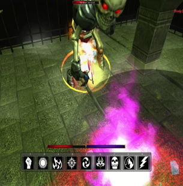
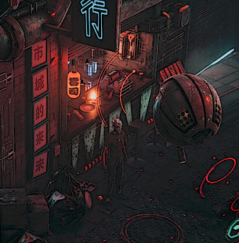
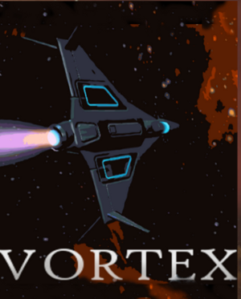

Crypt - The Black Tower

Crypt is a third-person click to move adventure-based RPG built in the game engine Unity
using C#. The game takes you into the role of a recently summoned skeleton from a decrepit
and clearly insane necromancer. You are left to find your own way through this strange and
dangerous world. Do you serve the will of your dark master or make your own path as
something more? The game takes its largest inspiration from classic RPG games such as Dark
Souls and Diablo 2.
Dreams of Solari - Chapter 1

Dreams of Solari a Cyberpunk themed text-based 2D choose your own adventure RPG built in
the Unity Engine using C# and the Fungus Narrative UI framework. The game throws you into
a futuristic world of high-tech weapons, vicious gangs, corporate factions and twisted
abominations. Make your mark as a merc of the lower city or be crushed to dust by the meat
grinder that is New London, the last city on earth.
Vortex

Vortex is a 3D open level star fighter pilot game in which the player controls StarCraft that can also
perform multiple maneuvers in a All-Range Mode style flight simulated cosmic world. Throughout the game,
the player can fly or drive through power-ups to collect them akin to classics like Star Fox 64. However
this game also contains an RPG elements as one collects loot from missions you can upgrade an outfit your
fighter with new weapons' shields and engines as well as boost the cores systems of your ship such as body
and shields. .